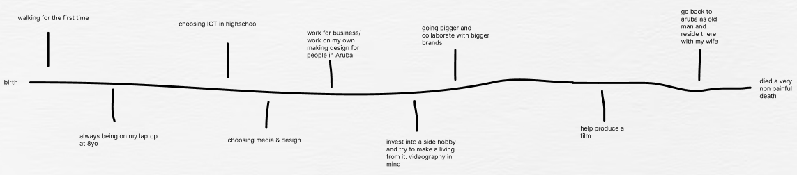

Core Values
Presenter
HardWorking
Honest
Empathetic
I'm an honest and empathetic team player, committed to collaborative success. I turn presentations into engaging performances to boost my confidence and connect with my audience.
Weaknesses
Procrastination
Disorganization
Time Management
Lack of Confidence in My Work
I procrastinate when I'm uncertain or lack a plan. To improve, I've set a daily goal of at least two hours of work. I sometimes lack confidence in my work, which might be linked to how I present it.
Personality test
Upon reading about my personality type, I discovered a strong alignment with my core values. I am curious, enthusiastic, and easy-going. However, the described weaknesses also resonate with me.
When it comes to career paths, I found myself in agreement with the analysis. I dislike repetitive jobs where every day is the same, having experienced that before. Instead, I thrive on working on diverse projects with different clients, as the variety and creativity involved are truly exciting.
Future Timeline
In the future, I aspire to work with various businesses and brands to design and market creative materials like websites, posters, and commercials. I aim to run my own business specializing in website creation, becoming a proficient full-stack developer, and enhancing existing websites. If my plans change, I still seek a creative and innovative role within a company. I am dedicated to improving my coding skills, particularly in animation.
